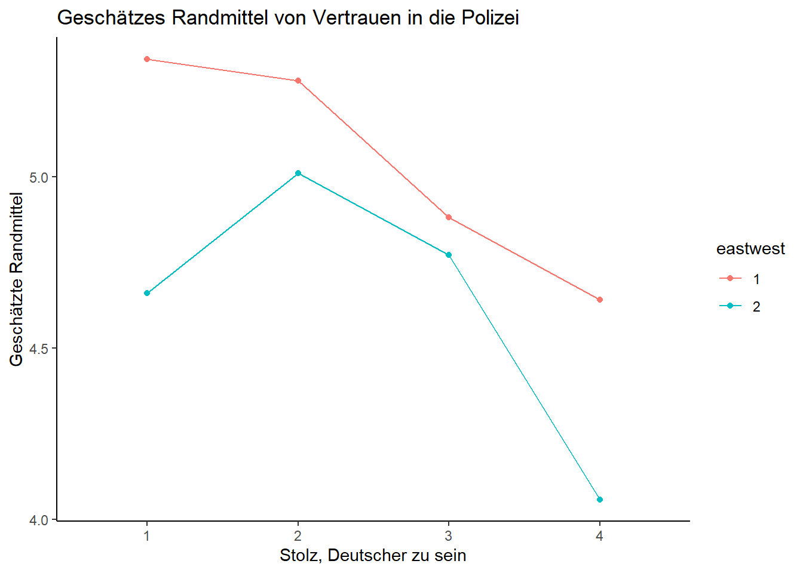
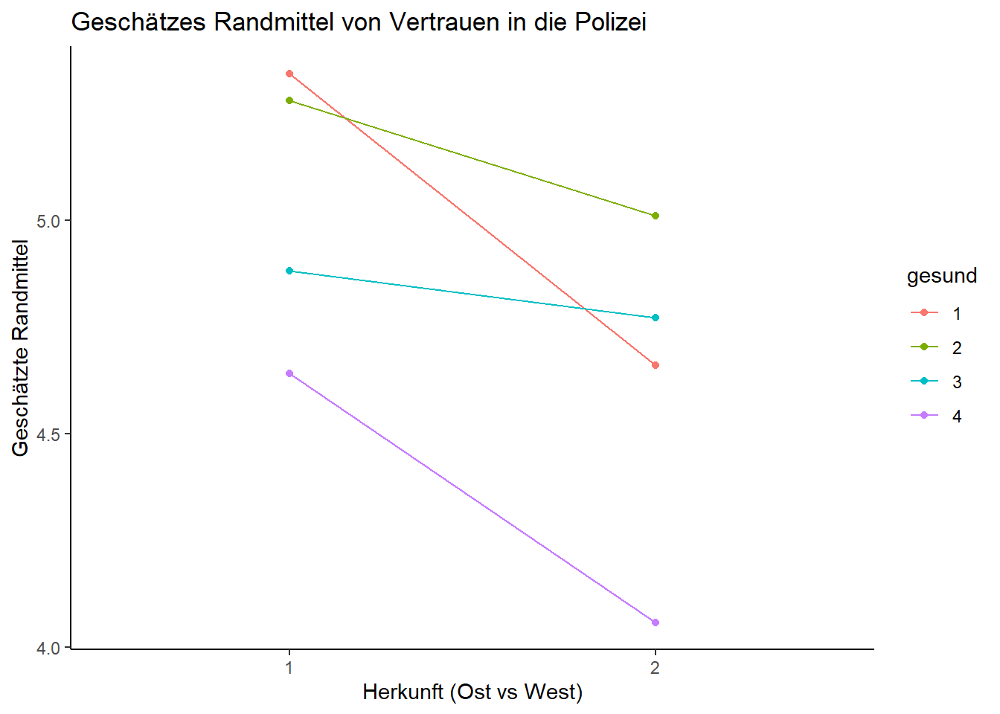

Die Varianzanalyse
1 Grundlagen der Varianzanalyse
Die Varianzanalyse weitet den Grundgedanken des t-Tests aus, indem sie den simultanen Vergleich von Gruppenmittelwerten über mehr als zwei Gruppen erlaubt. Die einfaktorielle Varianzanalyse definiert die Gruppen dabei anhand eines Faktors (einer unabhängigen Variable), die mehrfaktorielle Varianzanalyse erlaubt mehrere unabhängige kategoriale Variablen im Modell, ist aber nicht mit der multivariaten Varianzanalyse (MANOVA) zu verwechseln, die auch mehrere metrische abhängige Variablen gleichzeitig zulässt.
Wenn die Gruppierungsvariable (also die unabhängige Faktor-Variable) mehr als zwei Gruppen unterscheidet, müssen nach der Anova Post-Hoc Tests durchgeführt werden. Denn sollte die Varianzanalyse insgesamt signifikante Werte liefern, wurde zwar festgestellt, dass es überzufällige Unterschiede zwischen den durch die Faktorstufen definierten Gruppen gibt, bei drei und mehr Faktorstufen bleibt aber noch unklar, auf welchen Gruppenunterschieden dieses Ergebnis beruht. Post hoc-Tests liefern spezifischere Informationen dazu, welche Gruppenmittelwerte signifikant voneinander abweichen.
1.1 Laden der Daten und benötigten Pakete
Wir beginnen zunächst damit die notwendigen Pakete zu laden.
Anschließend laden wir unseren Datensatz:
1.2 Datenmanagement
Um mit dem Datensatz zu arbeiten benötigen wir einige grundlegende Schritte des Datenmanagements für ausführliche Erklärungen siehe hier. Für unsere Varianzanalyse möchten wir uns anschauen, wie sich das Alter (und Geschlecht) der Befragten auf ihr Vertrauen in die Bundesregierung auswirkt. Wir nutzen dazu die folgenden Variablen:
| Variable | Beschreibung | Ausprägungen |
|---|---|---|
| pn11 | Genereller Stolz, Deutscher zu sein | -42 = Datenfehler -11 = TNZ Split -10 = TNZ Filter -9 = Keine Angabe 1 = Sehr Stolz 2 = Ziemlich Stolz 3 = Nicht sehr stolz 4 = Gar nicht stolz |
| eastwest | Erhebungsgebiet West-Ost | 1= Alte Bundesländer (Westen) 2 = Neue Bundesländer (Osten) |
| agec | Alter der Befragten (gruppiert) | -32 = nicht generierbar 1 = 18-29 Jahre 2 = 30-44 Jahre 3 = 45-59 Jahre 4 = 60-74 Jahre 5 = 75-89 Jahre 6 = über 89 Jahre |
| pt14 | Vertrauen in die Polizei | -42 = Datenfehler -11 = TNZ Split -9 = Keine Angabe 1 = Gar kein Vertrauen … 7 = Großes Vertrauen |
Innerhalb unseres Datenmanageements schließen wir fehlerhafte und fehlende Werte der Variablen sex, agec und pt12 aus und benennen falls nötig die Variablen um:
2 Voraussetzungsprüfung für einfaktorielle und mehrfaktorielle Varianzanalyse
Die Varianzanalyse ist ein statistisches Verfahren, dass bestimmte Voraussetzungen bezüglich der abhängigen und unabhängigen Variablen voraussetzt. Dies sind im Überblick:
- Datenniveau der AV (metrisch) und UV (Faktor)
- Normalverteilung der abhängiven Variablen
- Homogenität der Fehlervarianzen der unabhängigen Variablen
Die meisten Voraussetzungen, die für die Durchführung und Interpretation einer Varianzanalyse erfüllt sein müssen, lassen sich bereits im Vorfeld der eigentlichen Analyse überprüfen. So kann das Messniveau unmitttelbar festgestellt werden. Es gilt für die abhängige (y-)Variable stets, dass sie intervallskaliert sein muss, in R also als ein Vektor vorliegen muss. Die Faktoren bzw. unabhängige(n) (x-) Variable(n) hingegen müssen zwingend nominalskaliert sein und in R demnach als Faktoren vorliegen.
2.1 Überprüfung der Normalverteilung
Eine weitere wichtige, leicht vorab zu prüfende Bedingung, die für eine Varianzanalyse erfüllt sein muss, ist die Normalverteilung der abhängigen Variable. Diese können wir graphisch mit einem Histogrammm überprüfen:
#Histogramm ausgeben
ggplot(daten, aes(trustpol)) +
geom_histogram(aes(y = after_stat(count)),
color = "black", fill = "grey",
binwidth = 1) +
labs(x = "Vertrauen in die Polizei",
y = "")
Wir sehen an der Grafik, dass die Variable Zufriedenheit rechtssteil ist, also die Teilnehmer der Befragung eher ein höheres Vertrauen angegeben haben.
Zusätzliche Gewissheit bezüglich des Vorliegens der Normalverteilung bietet der Kolmogorov-Smirnov-Test oder der Shapiro-Wilk-Test (welcher für kleinere Stichproben zwischen 3 und 5000 Fällen konzipiert ist). In R erhalten wir diese Tests mit dem Befehl LillieTest() aus dem Paket DescTools() bzw. shapiro.test(). Beide Tests testen auf Abweichung von der Normalverteilung, demnach sollte diese nicht signifikant ausfallen (da ein signifikanter Test aussagt, dass eine Abweichung von der Normalverteilung besteht, was wir nicht möchten).
Lilliefors (Kolmogorov-Smirnov) normality test
data: daten$trustpol
D = 0.18541, p-value < 2.2e-16
Shapiro-Wilk normality test
data: daten$trustpol
W = 0.91262, p-value < 2.2e-16Im vorliegenden Beispiel ist der Test signifikant. Allerdings reagieren beide Tests insbesondere bei großen Stichproben sehr sensibel, sodass bereits leichte Abweichungen von der Normalverteilung (etwa durch Ausreißer) die Tests signifikant werden lassen; in diesen Fällen ist es sinnvoll eher auf die graphische Überprüfung (siehe oben) zu schauen. Sowohl der Kolmogorov-Smirnov-Test als auch die Grafik lassen jedoch nicht auf eine perfekte Normalverteilung unserer abhängigen Variablen schließen. In diesem Fall kann die Varianzanalyse dennoch gerechnet werden, da solange die Verteilung nicht extrem steil ist, das Verfahren einigermaßen robust ist. Bei einer sehr starken Verletzung der Normalverteilung müsste ggf. auf nicht parametrische Tests wie den Kruskal-Wallis Test ausgewichen werden.
2.2 Überprüfung der Homogenität der Fehlervarianzen
Die letzte Voraussetzung, die für eine Varianzanalyse erfüllt sein muss, ist die Homogenität der Fehlervarianzen. Um diese zu testen, nutzen wir den Levene-Test auf Varianzhomogenität. Hierfür nutzen wir die Funktion leveneTest()aus dem Paket car:
#Levene-Test für einfaktorielle Varianzanalyse
daten %>%
leveneTest(trustpol~stolzd, data = ., center = mean)
#Levene-Test für mehrfaktorielle Varianzanalyse ausgeben
daten %>%
leveneTest(trustpol ~ stolzd*agec*eastwest, data = ., center = mean)- 1
- Innerhalb der Klammer müssen wir zunächst unsere abhängige Variable angeben. Danach folgt eine Tilde (~). Im Anschluss müssen wir unsere unabhängige(n) Variablen angeben. Die Tilde sagt quasi, dass unsere abhängige Variable durch unsere unabhängigen Variablen bestimmt wird.
- 2
- Bei mehrenen unabhängigen Variablen können wir diese mit einem * verbinden. Hier wird der Test für beide Variablen sowie den Interaktionsterm ausgeben.
Levene's Test for Homogeneity of Variance (center = mean)
Df F value Pr(>F)
group 3 6.4136 0.0002568 ***
1589
---
Signif. codes: 0 '***' 0.001 '**' 0.01 '*' 0.05 '.' 0.1 ' ' 1
Levene's Test for Homogeneity of Variance (center = mean)
Df F value Pr(>F)
group 45 1.8852 0.0004028 ***
1547
---
Signif. codes: 0 '***' 0.001 '**' 0.01 '*' 0.05 '.' 0.1 ' ' 1Wenn der Levene-Test statistisch signifikant ausfällt, sollte die Hypothese homogener Varianzen abgelehnt werden. Falls der Test wie im vorliegenden Fall signifikant ausfällt (da der Pr(>F-Wert) kleiner als 0.05 ist) wurde die Voraussetzung der Homogenität der Fehlervarianzen verletzt. In einem solchen Fall können wir wahlweise auf nicht-parametrische Tests ausweichen, oder die Varianzanalyse dennoch berechnen, wenn wahlweise die deskriptiven Kennwerte keine allzu große Streuung aufweisen, oder wir einen alternativen Posthoc-Test (etwa Tamhame T2) wählen.
3 Einfaktorielle Varianzanalyse (ohne Messwiederholung)
Nachdem wir die Voraussetzungen geprüft haben, schauen wir uns die einfaktorielle Varianzanalyse an. Im vorliegenden Beispiel möchten wir gerne überprüfen, inwiefern sich das Alter (Variable agec; ) auf das Vertrauen in die Bundesregierung (Variable trustreg) auswirkt.
daten %>%
group_by(stolzd) %>%
summarise(Mittelwert = mean(trustpol, na.rm = T),
Standardabweichung = sd(trustpol, na.rm = T)) %>%
kable(digits = 2, col.names = c("Stolz", "M", "SD"), caption = "Descriptives Vertrauen")| Stolz | M | SD |
|---|---|---|
| 1 | 5.19 | 1.52 |
| 2 | 5.12 | 1.28 |
| 3 | 4.73 | 1.33 |
| 4 | 4.62 | 1.45 |
Anhand der deskriptiven Statistiken sehen wir, dass das Vertrauen in die Polizei am höchsten ausgeprägt ist, bei Personen die insbesondere stolz sind, Deutscher zu sein. Zudem erkennen wir, dass die Standardabweichungen der Kategorien sich nicht drastisch unterscheiden, wir demnach trotz der Verletzung der Varianzhomogenität die ANOVA rechnen können.
Anschließend können wir die einfaktorielle ANOVA berechnen.Dafür nutzen wir die Funktion aov_car aus dem afex-Packag:
fit <- daten %>%
dplyr::distinct(respid, .keep_all = T) %>%
aov_car(trustpol ~ stolzd + Error(respid), data = ., anova_table = "pes")
print(fit)Anova Table (Type 3 tests)
Response: trustpol
Effect df MSE F pes p.value
1 stolzd 3, 1589 1.83 13.42 *** .025 <.001
---
Signif. codes: 0 '***' 0.001 '**' 0.01 '*' 0.05 '+' 0.1 ' ' 1in welcher wir zunächst die abhängige Variable (happy) angeben müssen und nach einer Tilde die unabhängige Variabel (cntry) Zudem müssen wir den Zusatz + Error() nutzen un in der Klammer die Fallid (hier idno) angeben. Da die Variable idno doppelte Fälle hatte müssen wir in dem vorliegenden Beispiel diese ausschließen, da andernfalls der Befehl nicht funktioniert. Dies geschieht mit dem Befehl distinct welcher aus der Variablen idno alle doppelten Fälle ausschließt. Der Zusatz .keep_all = T bedeutet, dass wir alle Variablen des Datensatzes behalten wollen und nur die doppelten Fälle ausgeschlossen werden sollen. Alles speichern wir als Objekt fit welches wir anschließend mit print aufrufen.
Als Output erhalten wir eine Tabelle mit den folgenden Parametern:
- Effect: unabhängige Variable
- df: Freiheitsgrade (degrees of freedom)
- MSE: Fehlervarianz, mittlere quadratische Abweichung (mean squared errors)
- F: F-Werte
- pes: parties Eta-Quadrat (partial eta-quared)
- p.value: Signifikanz
Effect zeigt die unabhängige Variable des Modells, in diesem Fall die Variable Stolz ein Deutscher zu sein, stolzd. Die drei bedeutet, dass hier insgesamt eine Gruppe mit 3 anderen (= vier Ausprägungen) verglichen wurde.
Über die Werte der zweiten und vierten Spalte, die Freiheitsgrade (df) und die F-Werte (F) ließe sich, wenn man es wollte, der emprische F-Wert in der F-Tabelle, mit dem kritischen Wert (theoretischen F-Wert) vergleichen, um zu prüfen, ob die Nullhypothese, dass keine Unterschiede zwischen den durch die jeweilige Variable definierten Gruppen bestehen, verworfen werden darf. Diesen Aufwand kann man sich allerdings sparen, da R in der Spalte p.value die umgekehrte Aussage macht, dass die Nullhypothese mit der dort berichteten Fehlerwahrscheinlichkeit verworfen werden kann. Beim per Konvention in den Sozialwissenschaften mindestens geltenden Konfidenz-Niveau von 95%, dürfen im Umkehrschluss also für alle Modellterme signifikante Unterschiede in der Grundgesamtheit angenommen werden, die hier einen Wert <.05 aufweisen. Die Spalte ist damit die wichtigste der gesamten Tabelle! Im vorliegenden Datenbeispiel ist demnach ein signifikanter Unterschied des Stolzes ein Deutscher zu sein im Bezug auf das Vertrauen in die Polizei ersichtlich.
Die mittlere quadratische Abweichung (MSE) oder Fehlervarianz ist die Summe der Abweichungsquadrate aller Werte vom jeweiligen Gruppenmittelwert. Berechnet wird diese durch die Quadratsummer der Fehlerresiduen geteilt durch die Freiheitsgrade. Sie gibt damit die Varianz innerhalb der einzelnen Gruppen (=nicht erklärte Varianz) wieder.
Die Spalte pes steht für das partielle Eta-Quadrat und gibt die Erklärungskraft der einzelnen Faktoren im Hinblick auf die anhängige Variable an – partiell ist das Eta2, da es um die Einflüsse der übrigen Modellgrößen bereinigt ist (für unifaktorielle Analysen wie im vorliegenden Fall ist dies nicht relevant, allerdings für die multifaktorielle ANOVA). Im Datenbeispiel hat demnach der Stolz darauf ein Deutscher zu sein (und damit auch unser Gesamtmodell) eine Erklärkraft von 1.3 Prozent. Allerdings wissen wir lediglich, dass sich unsere Gruppen signifikant unterscheiden, nicht jedoch, ob sich alle Gruppen unterscheiden, oder lediglich einzelne. Daher benötigen wir die Posthoc-Tests.
3.1 PostHocTests
Zuletzt müssen wir die Posthoc-Tests berechnen, welche uns Aufschluss darüber geben, welche unserer Gruppen sich unterscheiden. Es gibt verschiedene Posthoc-Tests. Grundsätzlich ist der Tukex-Post-Hoc Test zu empfehlen, welche wir über die Funktion emmeansaus dem emmeans-Package aufrufen. Bei fehlender Varianzhomogenität können wir zudem den tamhane-T2 Test nutzen. Dieser basiert allerdings auf einem aov-Objekt, daher geben wir hier mit aov die ANOVA erneut aus. Innerhalb von emmeans können wir hingegen einfach auf unser zuvor spezifiziertes Modell fit verweisen, müssen allerdings noch mit specs= angeben, auf Basis welcher Variablen der Gruppenvergleich durchgeführt werden soll.
contrast estimate SE df t.ratio p.value
stolzd1 - stolzd2 0.0714 0.0990 1589 0.722 0.8884
stolzd1 - stolzd3 0.4528 0.1081 1589 4.189 0.0002
stolzd1 - stolzd4 0.5662 0.1302 1589 4.350 0.0001
stolzd2 - stolzd3 0.3814 0.0829 1589 4.598 <.0001
stolzd2 - stolzd4 0.4948 0.1102 1589 4.490 <.0001
stolzd3 - stolzd4 0.1134 0.1184 1589 0.957 0.7736
P value adjustment: tukey method for comparing a family of 4 estimates 1 2 3
2 0.98531 - -
3 0.00066 1.5e-05 -
4 0.00049 0.00014 0.93056Hier interessiert uns jeweils der p-value (für den Tamhame T2 Test wird uns nur dieser angezeigt). Werte unter .05 bedeuten, dass zwischen diesen Gruppen ein signifikanter Mittelwertunterschied besteht. In unserem Beispiel sehen wir Unterschiede zwischen
3.2 Exkurs: Kruskal Wallis Test
4 Mehrfaktorielle Varianzanalyse
In der mehrfaktoriellen Varianzanalyse können wir unser Modell aus der einfachen Varianzananlyse erweitern. In diesem Beispiel nutzen wir neben der Ländervariablen (cntry) zusätzlich die Variable Geschlecht (gndr) um die Lebenszufriedenheit (happy) vorherzusagen.
Zunächst möchten wir uns anhand von deskriptiven Statistiken einen Überblick über unsere Daten verschaffen. Dafür nutzen wir die group_by-Funktion in Kombination mit der summarise-Funktion. Im nachfolgenden Schritt haben wir mit Hilfe des Befehls kable() aus dem Paket knitr das Aussehen unserer Tabelle verschönert. Dieser Schritt ist optional.
#Deskriptive Statistiken ausgeben
daten %>%
group_by(stolzd, eastwest) %>%
summarise(Mittelwert = mean(trustpol, na.rm = T),
Standardabweichung = SD(trustpol, na.rm = T)) %>%
kable(digits = 2, col.names = c("Stolz", "Herkunft", "M", "SD"), caption = "Descriptives Vertrauen")| Stolz | Herkunft | M | SD |
|---|---|---|---|
| 1 | 1 | 5.37 | 1.35 |
| 1 | 2 | 4.93 | 1.71 |
| 2 | 1 | 5.24 | 1.25 |
| 2 | 2 | 4.87 | 1.29 |
| 3 | 1 | 4.78 | 1.32 |
| 3 | 2 | 4.64 | 1.35 |
| 4 | 1 | 4.79 | 1.45 |
| 4 | 2 | 4.27 | 1.39 |
Zunächst können wir unsere deskriptiven Statistiken betrachten. Hier interessieren uns insbesondere die Mittelwerte für die einzelnen Gruppen. Diese Mittelwerte im Fließtext kurz zu erwähnen, gehört zum „guten Ton” bei der Auswertung einer Varianzanalyse und sollte daher nicht vergessen werden.
Nun können wir unsere ANOVA aufstellen. Es gibt verschiedene Möglichkeiten eine ANOVA zu berechnen, namentlich Type I, II und III. Die einzelnen Typen unterscheiden sich darin, wie die Parameter (insbesondere die Quadratsumme) berechnet wird. Typ I sollte vor allem für ausgeglichene Daten verwendet werden, also Daten bei der für jede Gruppe die gleiche Anzahl an Fällen vorliegen. Ist dies nicht der Fall, sollte Typ II oder Typ III verwendet werden. Der typische Befehl für eine Anova in R ist der Befehl aov(). Dieser ist jedoch nur für die Typ I Anova ausgelegt, daher nutzen wir hier erneut den Befehl aov_car() (sowie den distict-Befehl) aus dem afex-Paket welcher standardmäßig die Anova nach Typ III berechnet. Im Prinzip nutzen wir die selbe Syntax wie bei der unifaktoriellen Anova. Wir ergänzen allerdings unsere zweitere unabhängige Variable, beziehungsweise verbinden die beiden unabhängigen Variablen mit einem *. Dadurch erhalten wir sowohl die Werte für die einzelnen Variablen als auch für den Interaktionsterm, also das Zusammenspiel der Variablen.
fit2 <- daten %>%
dplyr::distinct(respid, .keep_all = TRUE) %>%
afex::aov_car(trustpol ~ stolzd * eastwest + Error(respid),
data = ., anova_table = "pes")
print(fit2)Anova Table (Type 3 tests)
Response: trustpol
Effect df MSE F pes p.value
1 stolzd 3, 1585 1.81 12.46 *** .023 <.001
2 eastwest 1, 1585 1.81 20.71 *** .013 <.001
3 stolzd:eastwest 3, 1585 1.81 1.07 .002 .359
---
Signif. codes: 0 '***' 0.001 '**' 0.01 '*' 0.05 '+' 0.1 ' ' 1Die Erläuterungen der einzelnen Parameter sind gleich zu den Erläuterungen der unifaktoriellen ANOVA, daher werden diese nicht wiederholt. Es zeigt sich, dass das Land erneut einen signifikanten Einfluss auf die Zufriedenheit hat (welcher im vorliegenden Modell etwas geringer mit 1.7 Prozent erklärter Varianz ausfällt). Keinen signfikanten Einfluss haben hingegen das Geschlecht der Befragten sowie das Zusammenspiel aus Geschlecht und Länderzugehörigkeit (p.value über .05).
Im Anschluss müssen wir, wie in der univariaten ANOVA, die Posthoc-Tests berechnen (im vorliegenden Fall können wir lediglich den Tukey-Test berechnen, das der Tamhame-Test nur für einfaktorielle Designs funktioniert).
4.1 Post-Hoc Tests
contrast estimate SE df t.ratio p.value
stolzd1 eastwest1 - stolzd2 eastwest1 0.12815 0.127 1585 1.006 0.9737
stolzd1 eastwest1 - stolzd3 eastwest1 0.59184 0.138 1585 4.298 0.0005
stolzd1 eastwest1 - stolzd4 eastwest1 0.58335 0.163 1585 3.578 0.0085
stolzd1 eastwest1 - stolzd1 eastwest2 0.43845 0.172 1585 2.552 0.1746
stolzd1 eastwest1 - stolzd2 eastwest2 0.49790 0.140 1585 3.561 0.0091
stolzd1 eastwest1 - stolzd3 eastwest2 0.72956 0.159 1585 4.580 0.0001
stolzd1 eastwest1 - stolzd4 eastwest2 1.09822 0.204 1585 5.384 <.0001
stolzd2 eastwest1 - stolzd3 eastwest1 0.46368 0.101 1585 4.575 0.0001
stolzd2 eastwest1 - stolzd4 eastwest1 0.45520 0.134 1585 3.403 0.0157
stolzd2 eastwest1 - stolzd1 eastwest2 0.31030 0.144 1585 2.150 0.3829
stolzd2 eastwest1 - stolzd2 eastwest2 0.36975 0.104 1585 3.548 0.0095
stolzd2 eastwest1 - stolzd3 eastwest2 0.60140 0.129 1585 4.657 0.0001
stolzd2 eastwest1 - stolzd4 eastwest2 0.97007 0.181 1585 5.347 <.0001
stolzd3 eastwest1 - stolzd4 eastwest1 -0.00849 0.144 1585 -0.059 1.0000
stolzd3 eastwest1 - stolzd1 eastwest2 -0.15339 0.153 1585 -1.000 0.9746
stolzd3 eastwest1 - stolzd2 eastwest2 -0.09393 0.117 1585 -0.806 0.9928
stolzd3 eastwest1 - stolzd3 eastwest2 0.13772 0.139 1585 0.989 0.9761
stolzd3 eastwest1 - stolzd4 eastwest2 0.50638 0.189 1585 2.682 0.1288
stolzd4 eastwest1 - stolzd1 eastwest2 -0.14490 0.177 1585 -0.821 0.9920
stolzd4 eastwest1 - stolzd2 eastwest2 -0.08545 0.146 1585 -0.587 0.9990
stolzd4 eastwest1 - stolzd3 eastwest2 0.14621 0.164 1585 0.889 0.9870
stolzd4 eastwest1 - stolzd4 eastwest2 0.51487 0.208 1585 2.475 0.2068
stolzd1 eastwest2 - stolzd2 eastwest2 0.05945 0.155 1585 0.383 0.9999
stolzd1 eastwest2 - stolzd3 eastwest2 0.29111 0.173 1585 1.682 0.6991
stolzd1 eastwest2 - stolzd4 eastwest2 0.65977 0.215 1585 3.070 0.0451
stolzd2 eastwest2 - stolzd3 eastwest2 0.23165 0.141 1585 1.638 0.7269
stolzd2 eastwest2 - stolzd4 eastwest2 0.60032 0.190 1585 3.154 0.0350
stolzd3 eastwest2 - stolzd4 eastwest2 0.36866 0.205 1585 1.798 0.6217
P value adjustment: tukey method for comparing a family of 8 estimates 4.2 Interaktionen visualisieren
Um einen möglichen Interaktionseffekt (auch wenn in unseren Fall der Interkationseffekt nicht signifikant war) auch anschaulich vermitteln bzw. oft auch verstehen zu können, empfiehlt es sich, diesen als Diagramm darzustellen. Hierzu nutzen wir die Pakete emmeans und ggplot2.
#Interaktionsplot ausgeben
emmip(fit2, eastwest ~ stolzd) +
labs(title = "Geschätzes Randmittel von Vertrauen in die Polizei",
y = "Geschätzte Randmittel",
x = "Stolz, Deutscher zu sein")
emmip(fit2, stolzd ~ eastwest) +
labs(title = "Geschätzes Randmittel von Vertrauen in die Polizei",
y = "Geschätzte Randmittel",
x = "Herkunft (Ost vs West)")